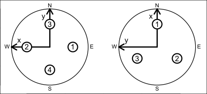
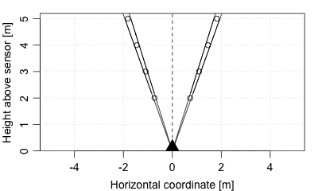

This class stores data from acoustic Doppler profilers. Some manufacturers call these ADCPs, while others call them ADPs; here the shorter form is used by analogy to ADVs.
dataAs with all oce objects, the data slot
for adp objects is a
list containing the main data for the object.
The key items stored in this slot include time, distance, and v, along with angles heading, pitch and roll.
metadataAs with all oce objects, the metadata slot
for adp objects is a list containing
information about the data or about the object itself.
Examples that are of common interest include oceCoordinate, orientation, frequency, and beamAngle.
processingLogAs with all oce objects, the processingLog slot
for adp objects is a
list with entries describing the creation and evolution
of the object. The contents are updated by various oce functions to
keep a record of processing steps. Object summaries and
processingLogShow() both display the log.
Although the [[<- operator may permit modification of the contents
of adp objects (see [[<-,adp-method),
it is better to use oceSetData() and oceSetMetadata(),
because those functions save an entry in the processingLog
that describes the change.
The full contents of the data and metadata slots of a adp
object may be retrieved in the standard R way using slot(). For
example slot(o,"data") returns the data slot of an object named o,
and similarly slot(o,"metadata") returns
the metadata slot.
The slots may also be obtained with the [[,adp-method
operator, as e.g. o[["data"]] and o[["metadata"]], respectively.
The [[,adp-method operator can also
be used to retrieve items from within the data and metadata slots.
For example, o[["temperature"]] can be used to retrieve temperature
from an object containing that quantity. The rule is that a named
quantity is sought first within the object's metadata slot,
with the data slot being checked only if metadata does not
contain the item. This [[ method can also be used to get
certain derived quantities, if the object contains sufficient
information to calculate them. For example, an object that holds
(practical) salinity, temperature and pressure, along with
longitude and latitude, has sufficient information to compute
Absolute Salinity, and so o[["SA"]] will yield the
calculated Absolute Salinity.
It is also possible to find items more directly, using oceGetData() and
oceGetMetadata(), but neither of these functions can
retrieve derived items.
adp objectsThe metadata slot contains various
items relating to the dataset, including source file name, sampling rate,
velocity resolution, velocity maximum value, and so on. Some of these are
particular to particular instrument types, and prudent researchers will take
a moment to examine the whole contents of the metadata, either in summary
form (with str(adp[["metadata"]])) or in detail (with
adp[["metadata"]]). Perhaps the most useful general properties are
adp[["bin1Distance"]] (the distance, in metres, from the sensor to
the bottom of the first bin), adp[["cellSize"]] (the cell height, in
metres, in the vertical direction, not along the beam), and
adp[["beamAngle"]] (the angle, in degrees, between beams and an
imaginary centre line that bisects all beam pairs).
The diagram provided below indicates the coordinate-axis and beam-numbering conventions for three- and four-beam ADP devices, viewed as though the reader were looking towards the beams being emitted from the transducers.

The bin geometry of a four-beam profiler is illustrated below, for
adp[["beamAngle"]] equal to 20 degrees, adp[["bin1Distance"]]
equal to 2m, and adp[["cellSize"]] equal to 1m. In the diagram, the
viewer is in the plane containing two beams that are not shown, so the two
visible beams are separated by 40 degrees. Circles indicate the centres of
the range-gated bins within the beams. The lines enclosing those circles
indicate the coverage of beams that spread plus and minus 2.5 degrees from
their centreline.

Note that adp[["oceCoordinate"]] stores the present coordinate system
of the object, and it has possible values "beam", "xyz", "sfm" or
"enu". (This should not be confused with
adp[["originalCoordinate"]], which stores the coordinate system used
in the original data file.)
The data slot holds some standardized items, and
many that vary from instrument to instrument. One standard item is
adp[["v"]], a three-dimensional numeric array of velocities in
m/s. In this matrix, the first index indicates time, the second bin
number, and the third beam number. The meaning of beams number depends on
whether the object is in beam coordinates, frame coordinates, or earth
coordinates. For example, if in earth coordinates, then beam 1 is
the eastward component of velocity.
Thus, for example,
library(oce)
data(adp)
t <- adp[['time']]
d <- adp[['distance']]
eastward <- adp[['v']][,,1]
imagep(t, d, eastward, missingColor="gray")plots an image of the eastward component of velocity as a function of time (the x axis)
and distance from sensor (y axis), since the adp dataset is
in earth coordinates. Note the semidurnal tidal signal, and the pattern of missing
data at the ocean surface (gray blotches at the top).
Corresponding to the velocity array are two arrays of type raw, and
identical dimension, accessed by adp[["a"]] and adp[["q"]],
holding measures of signal strength and data quality quality,
respectively. (The exact meanings of these depend on the particular type
of instrument, and it is assumed that users will be familiar enough with
instruments to know both the meanings and their practical consequences in
terms of data-quality assessment, etc.)
In addition to the arrays, there are time-based vectors. The vector
adp[["time"]] (of length equal to the first index of
adp[["v"]], etc.) holds times of observation. Depending on type of
instrument and its configuration, there may also be corresponding vectors
for sound speed (adp[["soundSpeed"]]), pressure
(adp[["pressure"]]), temperature (adp[["temperature"]]),
heading (adp[["heading"]]) pitch (adp[["pitch"]]), and roll
(adp[["roll"]]), depending on the setup of the instrument.
The precise meanings of the data items depend on the instrument type. All
instruments have v (for velocity), q (for a measure of data
quality) and a (for a measure of backscatter amplitude, also called
echo intensity).
Teledyne-RDI profilers have an additional item g (for
percent-good).
VmDas-equipped Teledyne-RDI profilers additional navigation data, with details listed in the table below; note that the RDI documentation (reference 2) and the RDI gui use inconsistent names for most items.
| Oce name | RDI doc name | RDI GUI name |
avgSpeed | Avg Speed | Speed/Avg/Mag |
avgMagnitudeVelocityEast | Avg Mag Vel East | ? |
avgMagnitudeVelocityNorth | Avg Mag Vel North | ? |
avgTrackMagnetic | Avg Track Magnetic | Speed/Avg/Dir (?) |
avgTrackTrue | Avg Track True | Speed/Avg/Dir (?) |
avgTrueVelocityEast | Avg True Vel East | ? |
avgTrueVelocityNorth | Avg True Vel North | ? |
directionMadeGood | Direction Made Good | Speed/Made Good/Dir |
firstLatitude | First latitude | Start Lat |
firstLongitude | First longitude | Start Lon |
firstTime | UTC Time of last fix | End Time |
lastLatitude | Last latitude | End Lat |
lastLongitude | Last longitude | End Lon |
lastTime | UTC Time of last fix | End Time |
numberOfHeadingSamplesAveraged | Number heading samples averaged | ? |
numberOfMagneticTrackSamplesAveraged | Number of magnetic track samples averaged | ? |
numberOfPitchRollSamplesAvg | Number of magnetic track samples averaged | ? |
numberOfSpeedSamplesAveraged | Number of speed samples averaged | ? |
numberOfTrueTrackSamplesAvg | Number of true track samples averaged | ? |
primaryFlags | Primary Flags | ? |
shipHeading | Heading | ? |
shipPitch | Pitch | ? |
shipRoll | Roll | ? |
speedMadeGood | Speed Made Good | Speed/Made Good/Mag |
speedMadeGoodEast | Speed MG East | ? |
speedMadeGoodNorth | Speed MG North | ? |
For Teledyne-RDI profilers, there are four three-dimensional arrays
holding beamwise data. In these, the first index indicates time, the
second bin number, and the third beam number (or coordinate number, for
data in xyz, sfm, enu or other coordinate systems). In
the list below, the quoted phrases are quantities as defined in Figure 9
of reference 1.
v is ``velocity'' in m/s, inferred from two-byte signed
integer values (multiplied by the scale factor that is stored in
velocityScale in the metadata).
q is ``correlation magnitude'' a one-byte quantity stored
as type raw in the object. The values may range from 0 to 255.
a is backscatter amplitude, also known as ``echo
intensity'' a one-byte quantity stored as type raw in the object.
The values may range from 0 to 255.
g is ``percent good'' a one-byte quantity stored as raw
in the object. The values may range from 0 to 100.
Finally, there is a vector adp[["distance"]] that indicates the bin
distances from the sensor, measured in metres along an imaginary centre
line bisecting beam pairs. The length of this vector equals
dim(adp[["v"]])[2].
As of 2016-09-27 there is
provisional support for the TRDI "SentinelV" ADCPs, which are 5
beam ADCPs with a vertical centre beam. Relevant vertical beam
fields are called adp[["vv"]], adp[["va"]],
adp[["vq"]], and adp[["vg"]] in analogy with the
standard 4-beam fields.
Extracting values Matrix data may be accessed as illustrated
above, e.g. or an adp object named adv, the data are provided by
adp[["v"]], adp[["a"]], and adp[["q"]]. As a
convenience, the last two of these can be accessed as numeric (as opposed to
raw) values by e.g. adp[["a", "numeric"]]. The vectors are accessed
in a similar way, e.g. adp[["heading"]], etc. Quantities in the
metadata slot are also available by name, e.g.
adp[["velocityResolution"]], etc.
Assigning values. This follows the standard form, e.g. to increase
all velocity data by 1 cm/s, use adp[["v"]] <- 0.01 + adp[["v"]].
Overview of contents The show method (e.g.
show(d)) displays information about an ADP object named d.
There are many possibilities for confusion
with adp devices, owing partly to the flexibility that manufacturers
provide in the setup. Prudent users will undertake many tests before trusting
the details of the data. Are mean currents in the expected direction, and of
the expected magnitude, based on other observations or physical constraints?
Is the phasing of currents as expected? If the signals are suspect, could an
incorrect scale account for it? Could the transformation matrix be incorrect?
Might the data have exceeded the maximum value, and then ``wrapped around'' to
smaller values? Time spent on building confidence in data quality is seldom
time wasted.
Teledyne-RDI, 2007. WorkHorse commands and output data format. P/N 957-6156-00 (November 2007).
Teledyne-RDI, 2012. VmDas User's Guide, Ver. 1.46.5.
A file containing ADP data is usually recognized by Oce, and so
read.oce() will usually read the data. If not, one may use the
general ADP function read.adp() or specialized variants
read.adp.rdi(), read.adp.nortek(),
read.adp.ad2cp(),
read.adp.sontek() or read.adp.sontek.serial().
ADP data may be plotted with plot,adp-method(), which is a
generic function so it may be called simply as plot.
Statistical summaries of ADP data are provided by the generic function
summary, while briefer overviews are provided with show.
Conversion from beam to xyz coordinates may be done with
beamToXyzAdp(), and from xyz to enu (east north up) may be done
with xyzToEnuAdp(). toEnuAdp() may be used to
transfer either beam or xyz to enu. Enu may be converted to other coordinates
(e.g. aligned with a coastline) with enuToOtherAdp().
Other classes provided by oce:
adv-class,
argo-class,
bremen-class,
cm-class,
coastline-class,
ctd-class,
lisst-class,
lobo-class,
met-class,
oce-class,
odf-class,
rsk-class,
sealevel-class,
section-class,
topo-class,
windrose-class,
xbt-class
Other things related to adp data:
[[,adp-method,
[[<-,adp-method,
ad2cpHeaderValue(),
adpConvertRawToNumeric(),
adpEnsembleAverage(),
adpFlagPastBoundary(),
adp_rdi.000,
adp,
as.adp(),
beamName(),
beamToXyzAdpAD2CP(),
beamToXyzAdp(),
beamToXyzAdv(),
beamToXyz(),
beamUnspreadAdp(),
binmapAdp(),
enuToOtherAdp(),
enuToOther(),
handleFlags,adp-method,
is.ad2cp(),
plot,adp-method,
read.adp.ad2cp(),
read.adp.nortek(),
read.adp.rdi(),
read.adp.sontek.serial(),
read.adp.sontek(),
read.adp(),
read.aquadoppHR(),
read.aquadoppProfiler(),
read.aquadopp(),
rotateAboutZ(),
setFlags,adp-method,
subset,adp-method,
subtractBottomVelocity(),
summary,adp-method,
toEnuAdp(),
toEnu(),
velocityStatistics(),
xyzToEnuAdpAD2CP(),
xyzToEnuAdp(),
xyzToEnu()